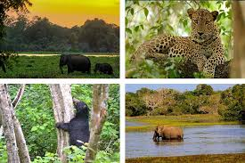
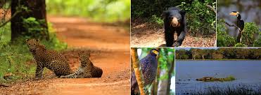
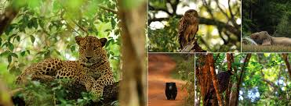

Wilpattu National Park
 
Wilpattu National Park is a national park in Sri Lanka.
The unique feature of this park is the existence of "Willus" (natural lakes) – natural, sand-rimmed water basins or depressions that fill with rainwater.
Located on the northwest coast lowland dry zone of Sri Lanka, the park is 30 km (19 mi) west of Anuradhapura
and 26 km (16 mi) north of Puttalam (approximately 180 km (110 mi) north of Colombo).
The park is 1,317 km2 (508 sq mi) (131,693 hectares) in area and ranges from 0–152 m (0–499 ft) above sea level.
Nearly one hundred and six lakes (Willu) and tanks are found spread throughout Wilpattu.
Wilpattu is the largest and one of the oldest national parks in Sri Lanka.
Wilpattu is world-renowned for its leopard (Panthera pardus kotiya) population.
A remote camera survey conducted in Wilpattu from July to October 2015 by the Wilderness
and Wildlife Conservation Trust captured photographs of forty-nine individual leopards in the surveyed area,
the core area density of which was between that of Yala National Park's Block I and Horton Plains National Park.
A second, more extensive camera trap survey was conducted from May to September 2018 by Samarasinghe et al.
(2022), covering a substantial area of the national park, approximately 660 km2,
and capturing a total of 133 individual leopards.[3] This count comprised 116 independent leopards (aged over 2 years) and 17 cubs.
Eight adult females were observed with 1–2 cubs during the study. Utilizing Bayesian spatial capture-recapture models,
the population density of leopards in Wilpattu National Park was estimated to be 18 leopards per 100 km2.
The mean abundance (N) within the effectively sampled area was calculated to be 144 leopards. Notably,
the national park maintains a healthy sex ratio of male to female leopards, estimated to be 1:2.03.
From December 1988 to 16 March 2003, the park was closed due to security concerns surrounding the Sri Lankan Civil War,
before being reopened to visitors sixteen years later.
Visitor access is currently limited to approximately 25% of the park, the remainder of which is dense forest or scrub.
Popular visiting periods span between the months of February and October,
although there are a number of private ecotourism groups that conduct safaris year-round.
 Location (Wilpattu National Park)